納品後に、制作者以外（先方・エンドクライアント）が文言や画像を直すための手引きです。
公開中のサイト：https://takumi-recruit.pages.dev/
直すファイルはsite/フォルダの中だけです（index.html・assets/）。動きの章（7.）は、動きを調整したい方向けの資料です。
index.html（文言）／assets/（画像・動画）base.css（骨格）・swipe.js（ページ送り）・style.css（見た目と動きの本体）・site.js（動きの一部）。動きの数値だけを変えたいときは 7.6 の例のように tokens.css の「値」だけを変えます<span class="ln">…</span>（見出しの1行）や <span class="band__t">…</span>（p1 の帯）、<p class="sheet__t">（p2・p4 の本文）、<p class="txt">（p3・p5 の本文）の中にあります。タグは消さずに、中の文字だけを書き換えます<span class="nb">…</span> で包みます（nb の中では改行されません）<b class="kw">…</b> です。強調の札（白地に黒字）は <span class="em" data-text="○○">○○</span> ですpage__label や num__k・num__n）は飾りです。日本語の文言は入れないでください（原稿との照合が合わなくなります）<span class="vh">・</span> や <span class="vh">：</span> は、音声読み上げ用に残している記号です。消さないでください| 直したいもの | 場所（index.html） | 注意 |
|---|---|---|
| 強調の札の文字（p1「まだ若いから」・p2「強み」・p3「ありがとう」） | <span class="em" data-text="…">…</span> | 中の文字と data-text の中身を同じ文字にそろえます（片方だけ直すと、ノイズが走る瞬間に別の文字が見えます） |
| p4 の数字「40」 | <span class="count" data-to="40">40</span> | 中の 40 と data-to の値を同じ数にそろえます。0から数え上がって data-to の数で止まります |
| p3 の7つの仕事（配線や照明〜外構工事） | works__btn（丸いアイコン）7個と works__item（項目名）7個 | 順番が対応しています（1番目のアイコン＝1番目の項目名）。数を増減するときは制作者に相談してください（丸の間隔・線・自動切り替えの時間が変わります） |
| p5 の3つの丸（建築・内装・設備） | hub__item（style="--i: 0" の数字は順番） | 項目を増やす場合は --i を 3、4… と続けます。3個を超えると窮屈になるので制作者に相談してください |
<h2 class="hd rv"> の3つの ln。帯＝<p class="band rv"> の4行と、締めの問い band--q<h2 class="hd rv">。本文＝sheet__t の3段落（3つ目は枠で囲まれる sheet__t--close）<p class="lead rv">。本文＝txt の3段落hd、本文＝sheet__t（p4）／hub・txt（p5）faq__q、答え＝faq__b。質問と答えのセットは faq__item。増やすときは faq__item を丸ごとコピーします（ただし1画面に収まる範囲で。現状で2組が上限の目安です）info__row（項目名＝dt、内容＝dd）。電話番号は <a class="info__tel" href="tel:0822411095"> の href（ハイフン無し）と表示の両方を直しますreq__row（項目名＝dt、内容＝dd）の増減で行を増やせます。給与の数字は <b class="req__pay">field。送信先は未設定です（公開方法に合わせて制作者が設定します。7.とは別の作業です）<head> の中）：<title>・description・og: 〜（SNS で共有したときの表示）。公開先の URL を変えたときは og:url・og:image・twitter:image の URL も変えます下の「現在の文字数」は、装飾の英字・番号と読み上げ用の記号を除いた、いま掲載している文字数です。この数字を大きく超えると、画面（高さ664px のスマホ）からはみ出すことがあります。増やす場合は制作者にご相談ください。
assets/ に上書きします。サイズは次の表のとおりです| 場所 | ファイル | 大きさ（横×縦 px） | 備考 |
|---|---|---|---|
| TOP の動画 | assets/hero.mp4 | 1080×1920（縦） | いまは仮の動画です。素材が届いたら差し替えます。動画に文字が入っていると、スマホで切れることがあります |
| TOP の静止画（読み込み中に出る） | assets/hero-poster.jpg | 1080×1920 | 動画の1コマ目に合わせます |
| p1 | assets/photo/p1-kyokan-lt.webp | 900×1612 | 人物は右寄りに見える作りです（見出しは左の暗い面） |
| p2 | assets/photo/p2-answer-lt.webp | 900×1612 | 顔を画面の上のほうに置きます |
| p3 | assets/photo/p3-work-lt.webp | 900×1260 | 作業員の顔は写真の上から約41％の位置 |
| p4 | assets/photo/p4-strength1.webp | 900×1612 | 顔は写真の上から約23％の位置 |
| p5 | assets/photo/p5-strength2.webp | 900×1612 | 同上 |
| p6 | assets/photo/p6-faq.webp | 900×1612 | 同上 |
| p7 | assets/photo/p7-company.webp | 900×1612 | 暗く敷いて使います |
| 募集要項・エントリーの上の帯 | assets/photo/p8-req.webp・p9-entry.webp | 1200×669 | 暗く加工して表示されます |
| SNS 共有の画像 | assets/ogp.jpg | 1200×630 | |
| タブのアイコン | assets/favicon.svg | — |
assets/photo/ の p1-kyokan.webp・p2-answer.webp・p3-work.webp と assets/logo.svg は、いまのページでは使っていません（差し替えても表示は変わりません）index.html の ?v=20261016o を新しい日付の文字列に全部書き換えます（先頭の <link> 3か所・動画と静止画の2か所・末尾の <script> 2か所。スマホが古いファイルを使い続けないため）| ページ | id | 見出し・内容 | 現在の文字数（見出し／全体） | 画像 | 注意 |
|---|---|---|---|---|---|
| TOP | top | （動画） | — | assets/hero.mp4 | 動画に文字を重ねない／仮の動画 |
| p1 共感 | p1 | 「まだ若いから」そう言われたことはありませんか？ | 24／115 | p1-kyokan-lt.webp | 帯は4行＋締めの問い。行を増やすと人物にかかる |
| p2 アンサー | p2 | ここでなら、その「若さ」が強みになる。 | 19／133 | p2-answer-lt.webp | 本文は3段落。最後の段落が枠で囲まれる |
| p3 仕事内容 | p3 | 電気工事を中心に、…（リード文） | 32／229 | p3-work-lt.webp | 文字量が最も多い。増やさない |
| p4 強み1 | p4 | 安定感×変革期 | 7／110 | p4-strength1.webp | 「40」は数え上がる数字 |
| p5 強み2 | p5 | 量×幅広さ | 5／117 | p5-strength2.webp | 丸は3つ |
| p6 よくある質問 | p6 | （質問と答え2組） | —／201 | p6-faq.webp | 2組が上限の目安 |
| p7 会社概要 | p7 | 会社名・代表・本社・TEL | —／65 | p7-company.webp | 行の増減は info__row |
| 募集要項 | requirements | 募集要項の表 | —／387 | p8-req.webp | 長さ自由（ページ内スクロール）。項目は req__row を増減 |
| エントリー | entry | フォーム | —／13 | p9-entry.webp | 送信先は未設定（制作者が設定） |
| ページ共通 | — | ヘッダー（社名・募集要項・エントリー）／NEXT／PC の左右の帯 | — | — | 社名は文字で作っている（wordmark）。ロゴ画像の支給があれば制作者に依頼 |
| 画面に出ない設定 | — | title・description・OGP・favicon | — | ogp.jpg・favicon.svg | <head> の中 |
!important を使うtokens.css・base.css・swipe.js・style.css・site.js の中身を、この資料の 7.6 に書いた「値の変更」以外で書き換えるindex.html に書きます）?v= を更新したか）このサイトの動きは、次の4つを言葉と数値で書き残します。コマ画像（写真のコマ送り）と数字を一緒に見れば、誰でも同じ動きを作り直せます。
時間は ms（1000分の1秒。1000ms＝1秒）で書きます。「0」はページが画面に切り替わった瞬間です。
コマ画像の見方：各ページの動きは、0／0.2／0.4／0.7／1／1.5／2／3／4 秒の9コマを横に並べた画像で示します（画像の左から順。左上の赤い数字は並び順で、時刻ではありません）。画像は幅390×高さ664px のスマホ画面で記録しています。先頭のコマは、前のページの画面が写ることがあります。
動きを作るときの流れ（制作者向け）
tools/refcap.mjs）tokens.css）に置く。ページ固有の遅れは style.css のページ別の変数（--t0・--lines-delay）に置く.rv の先頭は 200ms）。文字と写真は約2秒で出そろいます（下の時間割で、最長は p5 の丸の 2.3秒。飾りの線は 2.5秒前後まで続くページがあります）tokens.css の --dur-*・--delay-* で一括調整しますbase.css:175-178）| 名前 | 使う場所（セレクタ） | 順番と開始時刻 | 動き方 | 時間・イージング | 調整用の変数（今の値）／根拠 |
|---|---|---|---|---|---|
| 出現（持ち上がり） | .rv（index.html で rv が付いた要素） | ページに入ると、上から順に rv に is-on を付ける。1番目＝200ms、以後 120ms ずつ遅れる（n番目＝200＋120×(n−1)ms） | 透明で 1.2em 下にあった要素が、上へ持ち上がりながら現れる | 500ms／不透明度は ease、移動は --ease-out（cubic-bezier(0.11, 0.85, 0.14, 1)） | --dur-in（500ms）・--rise（1.2em）・--ease-out／base.css:120-121。順番の間隔 120ms と最初の 200ms は swipe.js:127（STEP_MS・START_MS） |
| 前のページの片づけ | .rv.is-on | 次のページに移ってから 700ms 後、前のページの is-on を外す（戻ってきたらもう一度出る） | 見えない間に最初の状態へ戻す | — | swipe.js:127（RESET_MS 700） |
| 写真の戻り | .ph（全ページの写真）・.ph-band（募集要項・エントリー） | ページに入った瞬間から | 1.35倍に寄っていた写真が、等倍へゆっくり戻る | 1100ms／cubic-bezier(0.16, 1, 0.3, 1)。p1 だけ 900ms・遅れ --delay-dawn | 直接書き：style.css:48（.ph）・style.css:376（.ph-band・1.15倍から）。p1 は style.css:72 |
| 見出しの打ち出し | .hd .ln（見出しの各行）。p1・p2・p4・p5 | 見出しの is-on（p1・p2 は 320ms）から、--t0 遅れて1行目の拭き取りが始まり、行ごとに 90ms ずつ遅れる | 輪郭だけの文字が左から描かれ、全行そろったら白く塗られる。塗り終わると輪郭の線が消える | 描く 450ms（cubic-bezier(0.65, 0, 0.35, 1)）／塗り 350ms（--t0＋600ms 後）／輪郭消し 200ms（--t0＋950ms 後） | --t0（p1＝--delay-type 150ms、p2・p3・p4・p5・p6＝650ms）・--delay-type／style.css:122-133、style.css:63（p1）、style.css:94（p2・p3・p6）、style.css:292（p4・p5） |
| 見出しの「ドン」 | .hd.is-on | 見出しの is-on から --t0＋560ms 後（白く塗られる瞬間） | 一度 1.07倍に膨らみ、右へ 0.15em ずれて戻る | 420ms／cubic-bezier(0.34, 1.8, 0.64, 1)（跳ねる） | --t0／style.css:296-297 |
| 強調の札 | .em（p1・p2 の見出し内、p3 の txt--close 内） | 見出し内：見出しの is-on から --t0＋900ms 後に札が完成（外枠の描き始めは 400ms 前）。p3 本文内：本文の is-on から 1100ms 後に完成 | ①外枠の四辺が順に描かれる（0.45秒）→②白い札と黒い文字に切り替わる→③その後 5秒に1回、約0.18秒だけ札が震え、横に切った帯が白黒反転して左右にずれる（ノイズ） | 枠 450ms linear／札への切替 1ms／ノイズ 5秒周期（無限）。ノイズは周期の 0〜3.6% の間だけ | 札の完成時刻 --gd（見出し内＝--t0＋900ms、本文内＝1100ms）／style.css:150-151、style.css:158-194。ノイズの周期 5s は style.css:162・172・173 の3か所に直書き |
| 幕（拭き取り） | .wipe（p1 の帯、p3 のリード文の中） | 親の rv が is-on になった時（p1 の帯は +450ms、p3 は +600ms 遅れ） | 左から右へ拭き取るように文字が現れ、1.2em だけ右へ滑り込む | 420ms（clip-path）／520ms（移動、--ease-out） | 直接書き：style.css:198-199、遅れは style.css:203（p1）・style.css:95（p3） |
| 白線の枠 | .page--photo::after・.page--frame::after（p1〜p7・募集要項・エントリー） | ページに入ってから --lines-delay 後：p1＝1300ms／p2・p3・p6＝1500ms／p4・p5・p7・募集要項・エントリー＝1200ms | 上の線が左→右へ走り、次に左右の線が上→下へ、最後に下の線が右→左へ。四辺は角を突き抜ける | 1000ms／各線の区切りは 0〜30%・30〜70%・70〜100%、cubic-bezier(0.7, 0, 0.3, 1) | --lines-delay・--frame-over（18px）・--frame-y（14px）・--color-frame／style.css:24・37-43・63・94 |
| NEXT ボタン | .nextbtn | ページが変わるたびに行き先名を入れ替える。TOP・最後のページ・長いページの途中では隠す | 隠す／出すときに不透明度が変わる。募集要項は表の下端まで読むと出る（.is-end） | 300ms linear | --dur-hover（300ms）／base.css:136、site.js:86-96 |
| 流れる英字（PC の左右の帯のみ） | .rail-ticker（左の帯の上・下、右の帯の下） | ページを開くとすぐ、止まらず流れ続ける | 輪郭だけの英字（REVENGE OF THE YOUNG — TAKUMI RECRUIT）が横へ流れる。上と下は逆向き | 48秒で1周／linear／無限 | 直接書き：style.css:408（48s）。文字は site.js:99 |
| ページ番号（PC の右の帯のみ） | .rail-big | ページが変わった瞬間 | 大きな番号が右から入り、横縞に切れたあと整う | 700ms／cubic-bezier(0.16, 1, 0.3, 1) | 直接書き：style.css:419-425 |
時刻は「ページに切り替わった瞬間＝0」からの ms です。数値は site/ の CSS・JS から拾い、コマ画像と見比べて確かめています（7.5）。
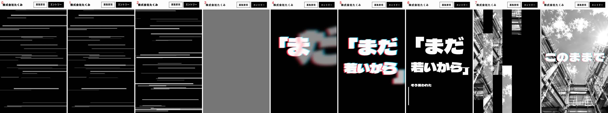
| 名前 | 使う場所 | 順番と開始時刻 | 動き方 | 時間・イージング | 調整用の変数／根拠 |
|---|---|---|---|---|---|
| 動画の自動再生 | .hero__video（assets/hero.mp4） | 読み込み直後から | 音なしで自動再生し、ループする（いまは仮の動画で、黒地に白い線のノイズ→「まだ若いから」の文字→建物の写真へ切り替わる動画） | 動画ファイルそのもの | なし（動画を差し替えると動きも変わる）／index.html:58、base.css:124 |
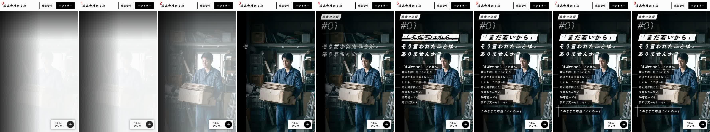
| 順 | 名前・場所 | 開始 | 動き方 | 時間・イージング | 変数／根拠 |
|---|---|---|---|---|---|
| 1 | 白い閃光 .shade（site.js が置く白い面） | 80ms | 画面全体が白い状態から、白が消えて暗い写真が見えてくる | 380ms／cubic-bezier(0.5, 0, 0.75, 0) | --delay-dawn（80ms）／style.css:73-78、site.js:32-37 |
| 2 | 写真の戻り .ph（p1） | 80ms | 1.35倍に寄った写真が、右端を軸に等倍へ戻る | 900ms／cubic-bezier(0.16, 1, 0.3, 1) | --delay-dawn／style.css:72 |
| 3 | 小見出しと番号 .num（rv 1番目） | 200ms で is-on、実際の出始め 680ms（写真が明るくなってから） | 下から持ち上がって現れる | 500ms | --delay-dawn・--dur-dawn（800ms）・--dur-in／style.css:78（遅れ＝80＋800−400＝480ms） |
| 4 | 見出し .hd（rv 2番目）の打ち出し | 320ms で is-on。1行目の描き始め 470ms、2行目 560ms、3行目 650ms | 輪郭の文字が左から描かれ、1070ms〜に白く塗られる（1420ms に塗り終わり、1620ms に輪郭が消える） | 描く 450ms／塗り 350ms／輪郭消し 200ms | --t0＝--delay-type（150ms）／style.css:122-133、style.css:63 |
| 5 | 見出しの「ドン」 | 1030ms | 白く塗られる瞬間に1回膨らんで戻る | 420ms | --t0／style.css:296 |
| 6 | 強調の札「「まだ若いから」」.em | 外枠 870ms〜、完成 1370ms、以後 5秒ごとにノイズ | 外枠が描かれ→白い札に→震える | 枠 450ms／ノイズ 約180ms（5秒周期） | --gd＝--t0＋900ms／style.css:150、158-194 |
| 7 | 帯4行 .band（rv 3〜6番目）の幕 | 帯ごとの is-on は 440／560／680／800ms。幕の開始はそれぞれ +450ms＝890／1010／1130／1250ms | 左から右へ拭き取るように現れる（黒80%の箱に白い字）。左の端から細い線も伸びる（is-on から 100ms 後、600ms） | 幕 420ms・移動 520ms（--ease-out）／線 600ms | style.css:198-199・203・207（直接書き） |
| 8 | 締めの問い .band--q（rv 7番目） | is-on 920ms、出始め 1620ms | 下から持ち上がって現れる。箱を囲む白線が左右・上下へはみ出す（2220ms〜、600ms） | 500ms／線 600ms | style.css:216（700ms）、232-241（1300ms） |
| 9 | 白線の枠 | 1300ms〜2300ms | 4辺が順に走る | 1000ms | --lines-delay＝1300ms／style.css:63 |
文字と写真が出そろうのは約 2.1 秒（締めの問いの出終わり）、線の仕上がりは約 2.8 秒です。
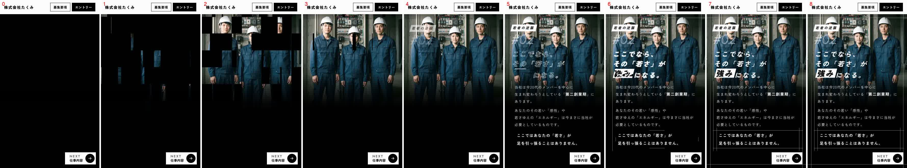
| 順 | 名前・場所 | 開始 | 動き方 | 時間・イージング | 変数／根拠 |
|---|---|---|---|---|---|
| 1 | 黒い四角が開く .tiles i（site.js が写真の上に並べる） | 四角ごとに 60〜560ms（順不同）。最後の四角が閉じ終わるのは 780ms | 写真の上の黒い四角（約 55×70px の格子）が、1つずつ横へ縮んで消え、写真が現れる。縮む向きは四角ごとに左右がランダム | 1つあたり 220ms／cubic-bezier(0.65, 0, 0.35, 1)。全体で 500ms の幅に散らす | site.js:8-11（TILE_W 55・TILE_H 70・SPREAD_MS 500・START_MS 60）／style.css:82-92 |
| 2 | 写真の戻り .ph--top | 0ms | 1.35倍から等倍へ | 1100ms | style.css:48 |
| 3 | 小見出しと番号 .num | is-on 200ms、出始め 800ms | 持ち上がって現れる | 500ms（遅れ 600ms） | style.css:95 |
| 4 | 見出し .hd の打ち出し | is-on 320ms。1行目の描き始め 970ms、2行目 1060ms、3行目 1150ms。塗り 1570ms〜、輪郭消し 1920ms | 輪郭→白塗り | 450／350／200ms | --t0＝650ms／style.css:94 |
| 5 | 見出しの「ドン」 | 1530ms | 1回膨らんで戻る | 420ms | style.css:296 |
| 6 | 強調の札「強み」 | 外枠 1370ms〜、完成 1870ms、以後 5秒ごとにノイズ | 外枠→白い札→震える | 枠 450ms | --gd＝--t0＋900ms |
| 7 | 本文 .sheet（rv 3番目） | is-on 440ms、出始め 1040ms | 持ち上がって現れる。左の細い縦線が上から下へ伸びる（1240ms〜、700ms） | 500ms／線 700ms | style.css:95・226 |
| 8 | 最後の段落の枠 .sheet__t--close | 1740ms〜2340ms | 上下の線が左右へ、左右の線が上下へ伸びる | 600ms | style.css:232-241 |
| 9 | 白線の枠 | 1500ms〜2500ms | 4辺が順に走る | 1000ms | --lines-delay＝1500ms／style.css:94 |
文字と写真は約 1.95 秒で出そろい、線の仕上がりは約 2.5 秒です。
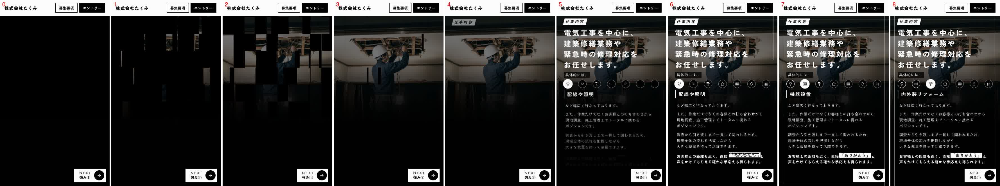
| 順 | 名前・場所 | 開始 | 動き方 | 時間・イージング | 変数／根拠 |
|---|---|---|---|---|---|
| 1 | 黒い四角が開く .tiles i | 60〜560ms | p2 と同じ | 220ms | site.js:8-31 |
| 2 | 写真の戻り .ph--work | 0ms | 1.35倍から等倍へ | 1100ms | style.css:48 |
| 3 | 小見出し .num（rv 1番目） | 出始め 800ms | 持ち上がって現れる | 500ms | style.css:95 |
| 4 | リード文 .lead（rv 2番目）と幕 .wipe | 出始め 920ms、幕 920ms〜 | 左から拭き取るように文字が現れる | 幕 420ms・移動 520ms | style.css:95・198 |
| 5 | 「具体的には、」.scope（rv 3番目） | 出始め 1040ms | 持ち上がって現れる | 500ms | style.css:95 |
| 6 | 7つのアイコンをつなぐ線 .works__nav::before | 1140ms〜1840ms | 左から右へ細い線が伸びる | 700ms／cubic-bezier(0.7, 0, 0.3, 1) | style.css:253-254 |
| 7 | アイコンの線画 .ic | 1140ms から 60ms ずつ遅れて1つずつ（1140／1200／…／1500ms）。描き終わりは 1740〜2100ms | 各アイコンの輪郭が描かれる | 600ms／cubic-bezier(0.65, 0, 0.35, 1) | --i（アイコンの順番）／style.css:271-275 |
| 8 | 仕事の自動切り替え（.works__btn・.works__item・.works__nav::after） | 1000ms に1つ目（配線や照明）、そのあと 1300ms ごとに次へ（2300ms＝機器設置、3600ms＝内外装リフォーム、…、8800ms＝外構工事）。最後は 2600ms 止まってから最初へ戻り（11400ms）、これを繰り返す | 光る丸が左から右へ進み、進んだ分だけ下の太い線が伸びる。項目名が左から滑り込んで入れ替わる。丸をタップすると、その項目で止まる | 項目名 300ms（不透明度）・450ms（移動）／丸 300〜400ms／太い線 600ms | site.js:57（1300・2600）・64（1000）／style.css:255-270 |
| 9 | 本文3段落 .txt（rv 4〜6番目） | 出始め 1160／1280／1400ms | 持ち上がって現れる | 500ms | style.css:95 |
| 10 | 強調の札「「ありがとう」」 | 外枠 1400ms〜、完成 1900ms、以後 5秒ごとにノイズ | 外枠→白い札→震える | 枠 450ms | style.css:151（--gd＝1100ms） |
| 11 | 白線の枠 | 1500ms〜2500ms | 4辺が順に走る | 1000ms | style.css:94 |
文字と写真は約 2.1 秒で出そろいます。
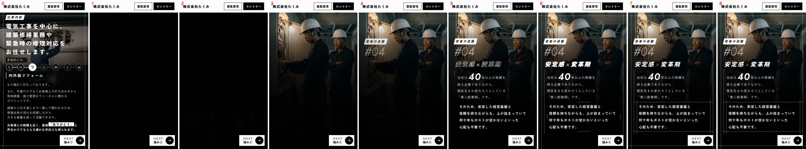
| 順 | 名前・場所 | 開始 | 動き方 | 時間・イージング | 変数／根拠 |
|---|---|---|---|---|---|
| 1 | 幕が上がる .page--curtain .ph | 80ms〜780ms | 黒い幕が下から上へ引き上がって写真が現れる（写真は 1.35倍から戻る） | 幕 700ms／cubic-bezier(0.7, 0, 0.2, 1)、写真 900ms | style.css:290-291 |
| 2 | 小見出しと番号 .num | 出始め 700ms | 持ち上がる | 500ms（遅れ 500ms） | style.css:293 |
| 3 | 見出し「安定感×変革期」.hd | is-on 320ms。描き始め 970ms、塗り 1570ms、輪郭消し 1920ms | 輪郭→白塗り | 450／350／200ms | --t0＝650ms／style.css:292 |
| 4 | 見出しの「ドン」 | 1530ms | 1回膨らんで戻る | 420ms | style.css:296 |
| 5 | 数字「40」.count（site.js が数える） | 700ms〜1600ms | 0から 40 まで数え上がる（最初は速く、最後はゆっくり）。止まる瞬間に 0.6倍から 1.4倍・少し傾いて弾む（1600〜2120ms） | 数える 900ms／弾み 520ms／cubic-bezier(0.34, 1.56, 0.64, 1) | site.js:75（700・900）／style.css:301-302 |
| 6 | 本文 .sheet（rv 3番目） | 出始め 940ms | 持ち上がる。左の縦線が伸びる（1240ms〜1940ms） | 500ms／700ms | style.css:293・226 |
| 7 | 最後の段落の枠 | 1740ms〜2340ms | 線が伸びる | 600ms | style.css:232-241 |
| 8 | 白線の枠 | 1200ms〜2200ms | 4辺が順に走る | 1000ms | style.css:24 |
このページの先頭コマ（0秒）には前のページ（p3）が写っています。文字と写真は約 2.1 秒で出そろいます。
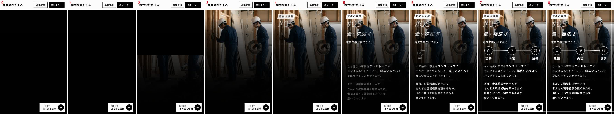
| 順 | 名前・場所 | 開始 | 動き方 | 時間・イージング | 変数／根拠 |
|---|---|---|---|---|---|
| 1 | 幕が上がる | 80ms〜780ms | p4 と同じ | 700ms | style.css:290-291 |
| 2 | 小見出しと番号 | 出始め 700ms | 持ち上がる | 500ms | style.css:293 |
| 3 | 見出し「量×幅広さ」 | is-on 320ms。描き始め 970ms、塗り 1570ms | 輪郭→白塗り＋「ドン」（1530ms） | 450／350／200ms、420ms | style.css:292・296 |
| 4 | 「電気工事だけでなく、」.hub（rv 3番目） | 出始め 940ms | 持ち上がる | 500ms | style.css:293 |
| 5 | 3つの丸をつなぐ線 .hub__list::before | 1340ms〜1940ms | 左から右へ線が伸びる | 600ms | style.css:309-313 |
| 6 | 3つの丸 .hub__item | 1つ目 1440ms、2つ目 1570ms、3つ目 1700ms（130ms 間隔）。出終わりは 2040／2170／2300ms | 小さく（0.2倍）下にいた丸が、跳ねながら元の大きさに現れる | 600ms（移動）・250ms（不透明度）／cubic-bezier(0.34, 1.8, 0.64, 1) | --i（順番）／style.css:321-325 |
| 7 | 線の上を行き来する光 .hub__list::after | 1940ms〜 | 細い光が線の上を左右に行き来し続ける（丸の後ろを通る） | 片道 2200ms／cubic-bezier(0.65, 0, 0.35, 1)／無限（往復） | style.css:315-320（直接書き） |
| 8 | 本文2段落 .txt（rv 4・5番目） | 出始め 1060／1180ms | 持ち上がる | 500ms | style.css:293 |
| 9 | 白線の枠 | 1200ms〜2200ms | 4辺が順に走る | 1000ms | style.css:24 |
文字と写真は約 2.3 秒で出そろい（丸が最後）、光は止まらず動き続けます。
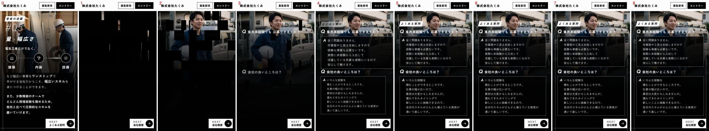
| 順 | 名前・場所 | 開始 | 動き方 | 時間・イージング | 変数／根拠 |
|---|---|---|---|---|---|
| 1 | 黒い四角が開く .tiles i | 60〜560ms | p2 と同じ | 220ms | site.js:8-31 |
| 2 | 小見出し .num（rv 1番目） | 出始め 800ms | 持ち上がる | 500ms | style.css:95 |
| 3 | 質問1 .faq__item（rv 2番目） | 320ms | 持ち上がって現れる | 500ms | base.css:120 |
| 4 | 答え1 .faq__a | 670ms〜1270ms | 質問の左上から、0.55倍の吹き出しが膨らむ（少し跳ねる） | 移動 600ms／cubic-bezier(0.34, 1.8, 0.64, 1)・不透明度 200ms（遅れ 350ms） | style.css:337-339 |
| 5 | 質問2（rv 3番目）と答え2 | 質問 440ms、答え 790ms〜1390ms | 同じ | 同じ | 同じ |
| 6 | 白線の枠 | 1500ms〜2500ms | 4辺が順に走る | 1000ms | style.css:94 |
文字と写真は約 1.4 秒で出そろいます。
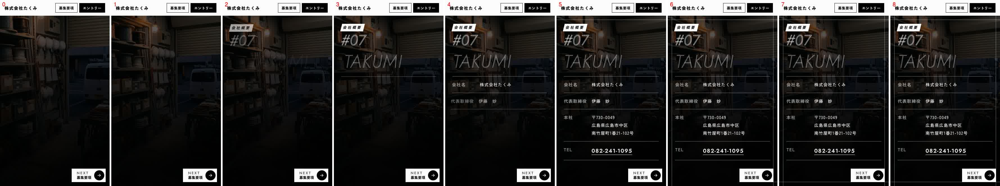
| 順 | 名前・場所 | 開始 | 動き方 | 時間・イージング | 変数／根拠 |
|---|---|---|---|---|---|
| 1 | 写真の戻り .ph（工場の入口） | 0ms | 1.35倍から等倍へ（暗く敷いてある） | 1100ms | style.css:48 |
| 2 | 小見出しと番号 .num（rv 1番目） | 200ms | 持ち上がる | 500ms | base.css:120 |
| 3 | 大きな輪郭の英字「TAKUMI」.company__en（rv 2番目） | 320ms〜1220ms | 右へ 40%ずれた位置から、滑り込んで定位置へ | 900ms／--ease-out（不透明度は 500ms） | --dur-in・--ease-out／style.css:349-350 |
| 4 | 表 .info（rv 3番目）の4行 .info__row | 表の is-on は 440ms。行は 740／850／960／1070ms から（110ms 間隔） | 左（2em）から滑り込みながら現れる | 不透明度 300ms・移動 600ms（--ease-out）。出終わりは 1340〜1670ms | style.css:351-355 |
| 5 | 白線の枠 | 1200ms〜2200ms | 4辺が順に走る | 1000ms | style.css:24 |
文字と写真は約 1.7 秒で出そろいます。
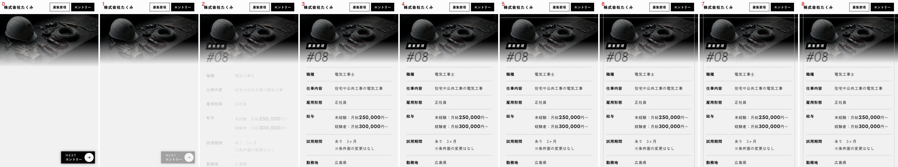
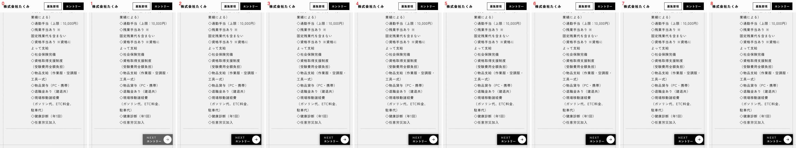
| 順 | 名前・場所 | 開始 | 動き方 | 時間・イージング | 変数／根拠 |
|---|---|---|---|---|---|
| 1 | 上の写真の帯の戻り .ph-band | 0ms | 1.15倍から等倍へ。下端は紙の色へ溶けている | 1100ms | style.css:376-378 |
| 2 | 小見出しと番号 .num（rv 1番目） | 200ms | 持ち上がる | 500ms | base.css:120 |
| 3 | 表 .req（rv 2番目） | 320ms | 表全体が持ち上がって現れる（行ごとの動きは無し） | 500ms | base.css:120 |
| 4 | 白線（黒線）の枠 | 1200ms〜2200ms | 4辺が順に走る（紙の面なので灰色の線） | 1000ms | style.css:24・365 |
| 5 | NEXT「エントリー」 | 表を最後まで読み、下端 .page__end が見えたとき | 不透明度が 0 から 1 へ（2コマ目で出る） | 300ms linear | --dur-hover／site.js:86-96、style.css:368 |
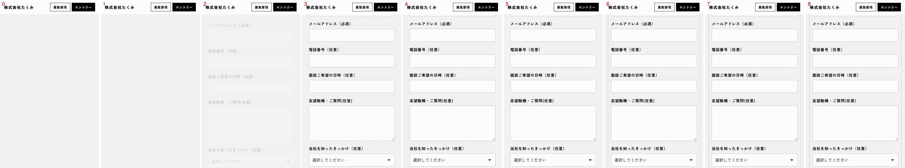
| 順 | 名前・場所 | 開始 | 動き方 | 時間・イージング | 変数／根拠 |
|---|---|---|---|---|---|
| 1 | 上の写真の帯の戻り .ph-band | 0ms | 募集要項と同じ | 1100ms | style.css:376 |
| 2 | 小見出しと番号 .num（rv 1番目） | 200ms | 持ち上がる | 500ms | base.css:120 |
| 3 | フォーム .form（rv 2番目） | 320ms | フォーム全体が持ち上がって現れる | 500ms | base.css:120 |
| 4 | 白線（黒線）の枠 | 1200ms〜2200ms | 募集要項と同じ | 1000ms | style.css:24 |
各ページのコマ画像（390×664px・0／0.2／0.4／0.7／1／1.5／2／3／4秒）と、7.4 の数値を見比べました。
| ページ | 見比べた点 | 結果 |
|---|---|---|
| p1 | 0〜0.2秒＝白い面、0.4秒＝写真が見え始める、0.7秒＝写真が出そろう、1秒＝見出しは輪郭、1.5秒＝見出し・帯が出て強調の札にノイズ、2秒＝締めの問い | 数値と一致 |
| p2・p3・p6 | 0.2〜0.4秒＝黒い四角が開く途中、0.7秒＝ほぼ開ききる、1秒＝見出し（p2）は輪郭／p3 は番号だけ、1.5秒＝文字が出そろう（p2 の強調は枠を描く途中、2秒で完成） | 数値と一致 |
| p3 の自動切り替え | 1.5秒＝「配線や照明」、2秒＝同じ、3秒＝「機器設置」、4秒＝「内外装リフォーム」 | 数値（1000ms／2300ms／3600ms）と一致 |
| p4・p5 | 0.2〜0.4秒＝暗い（p5 は幕が半分）、0.7秒＝写真が出そろう、1.5秒＝見出しと本文（p5 は丸の1つ目が出始め）、2秒＝p5 は1つ目の丸のみ、3秒＝丸が3つそろう | 数値と一致 |
| p7 | 0.4〜1秒＝番号→「TAKUMI」が滑り込む、1.5秒＝表の3行目まで、2秒＝4行そろう | 数値と一致 |
| 募集要項 | 1.5秒までに表が出そろう。NEXT は下端に着いて 0.2〜0.4秒で出る | 数値と一致 |
食い違いがあるときは、数値（CSS・JS の値）を正とします。ブラウザの描画は、画面が裏に回ったり端末が重かったりすると、コマの時刻が数十ミリ秒ずれて写ることがあります。
値を変える場所は site/tokens.css の末尾近く（/* motion */ の行）の「値」だけです。変数の名前や、その行の構成は変えません。変えたら 6. の確認を行い、問題が出たら元の値に戻します。
例1：全体を速くする（出現のテンポを速める）
--dur-in: 500ms; → 350ms／--rise: 1.2em; → 0.8emrv（小見出し・本文・帯・表など、上から順に出てくるもの）の出現が速く、持ち上がる距離も小さくなる。p7 の「TAKUMI」の透明度にも効くstyle.css と site.js に秒数が直接書いてあるため、速くしたいときは制作者に依頼する（7.7 の表）例2：写真の出方をゆっくりにする（p1 の閃光から写真が出るまで）
--delay-dawn: 80ms; → 400msstyle.css・site.js の直接書きの値です（7.7 の表）。変えるときは制作者に依頼する例3：強調の札のノイズの間隔を変える
style.css の 162・172・173 行目の 5s（3か所すべてを同じ値に）です。tokens.css の変数にはなっていません（制作者が --noise-interval のような変数にすれば、1か所で直せるようになります）5s → 8s にすると、札の「ビビッ」と震えるノイズが 8秒に1回になる。1回のノイズの長さ（約0.18秒）は、周期の 3.6%分のため、8秒にすると約0.29秒に伸びる5s| 変えたい動き | 場所 | いまの値 |
|---|---|---|
| 出現の間隔・最初の遅れ | swipe.js:127 | 120ms／200ms |
| 黒い四角の大きさ・散らす幅・1つの速さ | site.js:8-11・style.css:88 | 55×70px／500ms／220ms |
| 写真の戻りの速さ | style.css:48・72・290・376 | 1100ms（p1 は 900ms） |
| 白い閃光の速さ | style.css:75 | 380ms |
| 見出しの描く・塗る速さ | style.css:127-129 | 450／350／200ms |
| 仕事の自動切り替えの速さ | site.js:57・64 | 1300ms／最後 2600ms／最初 1000ms |
| 「40」の数え上がり | site.js:75 | 開始 700ms／900ms |
| 質問の答えが膨らむ速さ | style.css:337 | 600ms（遅れ 350ms） |
| 丸が出る間隔 | style.css:323 | 130ms ごと（最初 1000ms） |
| 光が行き来する速さ | style.css:319 | 2.2秒 |
| PC の流れる英字の速さ | style.css:408 | 48秒で1周 |
| 白線の枠が出る遅れ | style.css:24・63・94 | 1200／1300／1500ms |
tokens.css の動きの変数（今の値）| 変数 | 今の値 | 効く場所 |
|---|---|---|
--ease-out | cubic-bezier(0.11, 0.85, 0.14, 1) | 出現の移動、幕の移動、p7 の表・英字 |
--rise | 1.2em | 出現の持ち上がる距離 |
--dur-in | 500ms | 出現の長さ、p7 の英字の不透明度 |
--dur-dawn | 800ms | p1 の番号が出るまでの待ち（--delay-dawn＋これ−400ms） |
--delay-dawn | 80ms | p1 の閃光・写真の戻りの動き出し |
--delay-type | 150ms | p1 の見出しの打ち出しの遅れ（--t0） |
--dur-hover | 300ms | NEXT の出入り・ボタンの反転・矢印の動き |
--ease-pop・--dur-wipe・--dur-photo・--dur-type | cubic-bezier(0.34, 1.56, 0.64, 1)／700ms／5500ms／500ms | いまの CSS・JS からは使っていません（変えても表示は変わりません。実際の値は 7.7 の表のとおり別の場所に書いてあります） |